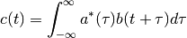

This module provides basic signal processing for seismic traces.
Create new trace object.
A Trace object represents a single continuous strip of evenly sampled time series data. It is built from a 1D NumPy array containing the data samples and some attributes describing its beginning and ending time, its sampling rate and four string identifiers (its network, station, location and channel code).
| Parameters: |
|
|---|
The length of the network, station, location and channel codes is not resricted by this software, but data formats like SAC, Mini-SEED or GSE have different limits on the lengths of these codes. The codes set here are silently truncated when the trace is stored
Value of trace between supporting points through linear interpolation.
| Parameters: |
|
|---|
Add values of other trace (self += other).
Add values of other trace to the values of self, where it intersects with other. This method does not change the extent of self. If interpolate is True (the default), the values of other to be added are interpolated at sampling instants of self. Linear interpolation is performed. In this case the sampling rate of other must be equal to or lower than that of self. If interpolate is False, the sampling rates of the two traces must match.
Muliply with values of other trace (self *= other).
Multiply values of other trace to the values of self, where it intersects with other. This method does not change the extent of self. If interpolate is True (the default), the values of other to be multiplied are interpolated at sampling instants of self. Linear interpolation is performed. In this case the sampling rate of other must be equal to or lower than that of self. If interpolate is False, the sampling rates of the two traces must match.
Set network, station, location, and channel codes.
Check if trace has overlap with a given time span and matches a condition callback. (internal use)
Append data to the end of the trace.
To make this method efficient when successively very few or even single samples are appended, a larger grow buffer is allocated upon first invocation. The traces data is then changed to be a view into the currently filled portion of the grow buffer array.
Cut the trace to given time span.
If the inplace argument is True (the default) the trace is cut in place, otherwise a new trace with the cut part is returned. By default, the indices where to start and end the trace data array are determined by rounding of tmin and tmax to sampling instances using Python’s round() function. This behaviour can be changed with the snap argument, which takes a tuple of two functions (one for the lower and one for the upper end) to be used instead of round(). The last sample is by default not included unless include_last is set to True. If the given time span exceeds the available time span of the trace, the available part is returned, unless want_incomplete is set to False - in that case, a NoData exception is raised. This exception is always raised, when the requested time span does dot overlap with the trace’s time span.
Downsample trace by a given integer factor.
| Parameters: |
|
|---|
Downsample to given sampling rate.
Tries to downsample the trace to a target sampling interval of deltat. This runs the Trace.downsample() one or several times. If allow_upsample_max is set to a value larger than 1, intermediate upsampling steps are allowed, in order to increase the number of possible downsampling ratios.
Stretch signal while preserving sample rate using sinc interpolation.
| Parameters: |
|
|---|
This method can be used to correct for a small linear time drift or to introduce sub-sample time shifts. The amount of stretching is limited to 10% by the implementation and is expected to be much smaller than that by the approximations used.
Check if a given frequency is above the Nyquist frequency of the trace.
| Parameters: |
|
|---|
Apply Butterworth lowpass to the trace.
| Parameters: |
|
|---|
Mean is removed before filtering.
Apply butterworth highpass to the trace.
| Parameters: |
|
|---|
Mean is removed before filtering.
Apply butterworth bandpass to the trace.
| Parameters: |
|
|---|
Mean is removed before filtering.
Whiten signal in time domain using autoregression and recursive filter.
| Parameters: | order – order of the autoregression process |
|---|
Whiten signal via frequency domain using moving average on amplitude spectra.
| Parameters: |
|
|---|
The signal is first demeaned and then tapered using td_taper. Then, the spectrum is calculated and inversely weighted with a smoothed version of its amplitude spectrum. A moving average is used for the smoothing. The smoothed spectrum is then tapered using fd_taper. Finally, the smoothed and tapered spectrum is back-transformed into the time domain.
If td_taper is set to 'auto', CosFader(1.0/width) is used. If fd_taper is set to 'auto', CosFader(width) is used.
Shift trace samples to nearest even multiples of the sampling rate.
| Parameters: | inplace – (boolean) snap traces inplace |
|---|
If inplace is False and the difference of tmin and tmax of both, the snapped and the original trace is smaller than 0.01 x deltat, snap() returns the unsnapped instance of the original trace.
Run special STA/LTA filter where the short time window is centered on the long time window.
| Parameters: |
|
|---|
| Scalingmethod | Implementation | Range |
|---|---|---|
| 1 | As/Al* Tl/Ts | [0,1] |
| 2 | (As/Al - 1) / (Tl/Ts - 1) | [-Ts/Tl,1] |
| 3 | Like 2 but clipping range at zero | [0,1] |
Detect peaks above given threshold.
From every instant, where the signal rises above threshold, a of time length of tsearch seconds is searched for a maximum. A list with tuples (time, value) for each detected peak is returned. The deadtime argument turns on a special deadtime duration detection algorithm useful in combination with recursive STA/LTA filters.
Extend trace to given span.
| Parameters: |
|
|---|
Return new trace with transfer function applied (convolution).
| Parameters: |
|
|---|
Calculate misfit and normalization factor against candidate trace.
| Parameters: |
|
|---|---|
| Returns: | tuple (m, n), where m is the misfit value and n is the normalization divisor |
If the sampling rates of self and candidate differ, the trace with the higher sampling rate will be downsampled.
Get FFT spectrum of trace.
| Parameters: |
|
|---|---|
| Returns: | a tuple with (frequencies, values) |
Fill string template with trace metadata.
Uses normal python ‘%(placeholder)s’ string templates. The following placeholders are considered: network, station, location, channel, tmin (time of first sample), tmax (time of last sample), tmin_ms, tmax_ms, tmin_us, tmax_us. The versions with ‘_ms’ include milliseconds, the versions with ‘_us’ include microseconds.
Show trace with matplotlib.
See also: Trace.snuffle().
Show trace in a snuffler window.
| Parameters: |
|
|---|
Show traces in a snuffler window.
| Parameters: |
|
|---|
This exception is raised by some Trace operations when tmin, tmax or number of samples do not match.
This exception is raised by some Trace operations when no or not enough data is available.
This exception is raised by some Trace operations when given frequencies are above the Nyquist frequency.
This exception is raised by some Trace operations when the trace is too short.
Get data range given traces grouped by selected pattern.
| Parameters: |
|
|---|---|
| Returns: | a dict with the combined data ranges. |
Examples:
ranges = minmax(traces, lambda tr: tr.channel)
print ranges['N'] # print minimum and maximum of all traces with channel == 'N'
print ranges['E'] # print mimimum and maximum of all traces with channel == 'E'
ranges = minmax(traces, lambda tr: (tr.network, tr.station))
print ranges['GR', 'HAM3'] # print minmum and maxium of all traces with
# network == 'GR' and station == 'HAM3'
ranges = minmax(traces, lambda tr: None)
print ranges[None] # prints minimum and maximum of all traces
Get time range given traces grouped by selected pattern.
| Parameters: | key – a callable which takes as single argument a trace and returns a key for the grouping of the results. If this is None, the default, lambda tr: (tr.network, tr.station, tr.location, tr.channel) is used. |
|---|---|
| Returns: | a dict with the combined data ranges. |
Try to connect traces and remove gaps.
This method will combine adjacent traces, which match in their network, station, location and channel attributes. Overlapping parts are handled according to the deoverlap argument.
| Parameters: |
|
|---|---|
| Returns: | list of traces |
2D rotation of traces.
| Parameters: |
|
|---|---|
| Returns: | list of rotated traces |
Affine transform of three-component traces.
Compute matrix-vector product of three-component traces, to e.g. rotate traces into a different basis. The traces are distinguished and ordered by their channel attribute. The tranform is applied to overlapping parts of any appropriate combinations of the input traces. This should allow this function to be robust with data gaps. It also tries to apply the tranformation to subsets of the channels, if this is possible, so that, if for example a vertical compontent is missing, horizontal components can still be rotated.
| Parameters: |
|
|---|---|
| Returns: | list of transformed traces |
Figure out what dependencies project() would produce.
Cross correlation of two traces.
| Parameters: |
|
|---|---|
| Returns: | trace containing cross correlation coefficients |
This function computes the cross correlation between two traces. It evaluates the discrete equivalent of

where the star denotes complex conjugate. Note, that the arguments here are swapped when compared with the numpy.correlate() function, which is internally called. This function should be safe even with older versions of NumPy, where the correlate function has some problems.
A trace containing the cross correlation coefficients is returned. The time information of the output trace is set so that the returned cross correlation can be viewed directly as a function of time lag.
Example:
# align two traces a and b containing a time shifted similar signal:
c = pyrocko.trace.correlate(a,b)
t, coef = c.max() # get time and value of maximum
b.shift(-t) # align b with a
Check if two traces have the same sampling rate.
| Parameters: |
|
|---|
Merge network-station-location-channel codes of a pair of traces.
Undocumented.
float, optional
float, optional
Calls evalresp and generates values of the instrument response transfer function.
| Parameters: |
|
|---|
str
tuple of 4 str objects, default: (None, None, None, None)
str, default: 'dis'
float
Calls evalresp and generates values of the inverse instrument response for deconvolution of instrument response.
| Parameters: |
|
|---|
str
tuple of 4 str objects, default: (None, None, None, None)
str, default: 'dis'
float
Evaluates frequency response from pole-zero representation.
| Parameters: |
|
|---|
(j*2*pi*f - zeros[0]) * (j*2*pi*f - zeros[1]) * ...
T(f) = constant * -------------------------------------------------------
(j*2*pi*f - poles[0]) * (j*2*pi*f - poles[1]) * ...
The poles and zeros should be given as angular frequencies, not in Hz.
list of complex objects, default: []
list of complex objects, default: []
complex, default: (1+0j)
Undocumented.
float, default: 1.0
int, default: 4
str, default: 'low'
Interpolates frequency response given at a set of sampled frequencies.
| Parameters: |
|
|---|
numpy.ndarray
numpy.ndarray
complex, optional
complex, optional
Get inverse as a new SampledResponse object.
The integration response, optionally multiplied by a constant gain.
| Parameters: |
|
|---|
gain
T(f) = --------------
(j*2*pi * f)^n
int, optional, default: 1
float, optional, default: 1.0
The differentiation response, optionally multiplied by a constant gain.
| Parameters: |
|
|---|
T(f) = gain * (j*2*pi * f)^n
int, optional, default: 1
float, optional, default: 1.0
Frequency response of an analog filter.
(see scipy.signal.freqs()).
list of float objects, default: []
list of float objects, default: []
Multiplication of several FrequencyResponse objects.
list of pyrocko.trace.FrequencyResponse objects, default: []
Call numpy.correlate() with fixes.
c[k] = sum_i a[i+k] * conj(b[i])
Note that the result produced by newer numpy.correlate is always flipped with respect to the formula given in its documentation (if ascending k assumed for the output).
Slow version of numpy.correlate() for comparison.
Get range of lags for which numpy.correlate() produces values.
Compute biased estimate of the first autocorrelation coefficients.
| Parameters: |
|
|---|
Compute autoregression coefficients using Yule-Walker method.
| Parameters: |
|
|---|
A biased estimate of the autocorrelation is used. The Yule-Walker equations are solved by numpy.linalg.inv() instead of Levinson-Durbin recursion which is normally used.
Return the hilbert transform of x of length N.
(from scipy.signal, but changed to use fft and ifft from numpy.fft)
Successively filter broken continuous trace data (coroutine).
Create coroutine which takes Trace objects, filters their data through scipy.signal.lfilter() and sends new Trace objects containing the filtered data to target. This is useful, if one wants to filter a long continuous time series, which is split into many successive traces without producing filter artifacts at trace boundaries.
Filter states are kept per channel, specifically, for each (network, station, location, channel) combination occuring in the input traces, a separate state is created and maintained. This makes it possible to filter multichannel or multistation data with only one co_lfilter() instance.
Filter state is reset, when gaps occur.
Use it like this:
from pyrocko.trace import co_lfilter, co_list_append
filtered_traces = []
pipe = co_lfilter(co_list_append(filtered_traces), a,b)
for trace in traces:
pipe.send(trace)
pipe.close()
Successively downsample broken continuous trace data (coroutine).
Create coroutine which takes Trace objects, downsamples their data and sends new Trace objects containing the downsampled data to target. This is useful, if one wants to downsample a long continuous time series, which is split into many successive traces without producing filter artifacts and gaps at trace boundaries.
Filter states are kept per channel, specifically, for each (network, station, location, channel) combination occuring in the input traces, a separate state is created and maintained. This makes it possible to filter multichannel or multistation data with only one co_lfilter() instance.
Filter state is reset, when gaps occur. The sampling instances are choosen so that they occur at (or as close as possible) to even multiples of the sampling interval of the downsampled trace (based on system time).
Any str out of ['time_domain', 'frequency_domain', 'envelope', 'absolute'].
Contains misfit setup to be used in trace.misfit()
| Parameters: |
|
|---|
Can be dumped to a yaml file.
str, optional
int
pyrocko.trace.FrequencyResponse, optional
str, default: 'time_domain'